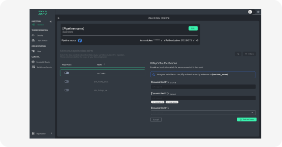
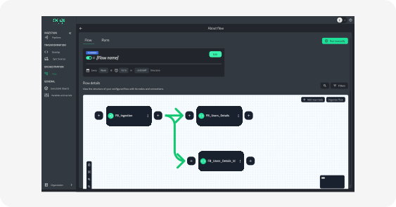
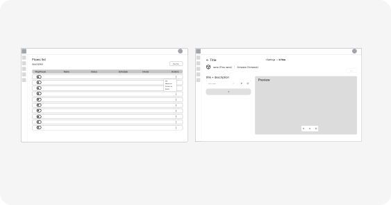

dex UI Revamp

Context
Data Engineering is inherently hard, complex, technical, and inaccessible to most companies and teams. While dex is a data engineering tool, over 60% of users lack deep technical knowledge, creating a usability gap. The mission was to obsessively pursue simplicity, transforming complex data engineering workflows into intuitive experiences that empowered all users—from seasoned engineers to business analysts.
Legacy interface
Our legacy interface was hindering both user success and team productivity.
Problems
- Users struggled with an outdated interface, inconsistent compared to modern competitors.
- Inconsistent UI patterns across flows created confusion and reduced task completion rates.
- No centralized design system led to fragmented experiences
- Product team unable to deliver cohesive experiences due to design debt
- Dev team wasting time rebuilding components instead of focusing on features

Inconsistent button styles and poor visual hierarchy throughout the interface
Process
A systematic approach to transforming complex data engineering workflows into intuitive user experiences.
- Competitors benchmarking and customer discovery
- Wireframes → low fidelity → high fidelity
- Validations with dev and product team
- Design System creation
Research & Benchs
UI audit of the platform
Led a collaborative UI audit alongside product and development teams to assess the current state of the platform. Identified critical pain points, UI inconsistencies, and usability issues, gathering valuable insights and suggestions from cross-functional stakeholders to drive design improvements.
Competitors Benchmarks
Led a comprehensive competitive analysis studying major competitors and aspirational industry leaders including Brex, dbt, Databricks, and Snowflake. Identified design patterns, user experience best practices, and innovative features to inform strategic design decisions.

Priorities
Established a prioritization framework centered on the platform's three most critical workflows: Transformation (enabling users to clean, structure, and prepare data), Ingestion (facilitating seamless data import from various sources), and Orchestration (automating and managing complex pipeline execution). These workflows represent the core of the user's daily activities and directly impact their ability to deliver value. Focusing on these high-frequency, high-stakes areas ensured maximum impact on user productivity and platform adoption.
Transformation

Ingestion
Orchestration
Execution and Deliverables
- Validated concepts through wireframes and low-fidelity testing
- Built scalable design system with tokens and component standards
- Prototyped high-fidelity interfaces for core user flows
- Facilitated iterative feedback through structured design sessions
- Validated technical stack using Radix UI and React components
- Documented component library with usage guidelines and specs
- Delivered seamless handoff with detailed implementation guidelines
Wireframes
Design System

Handoff

Notification Center project handoff
Solutions
Run button improvements x dbt
In data engineering platforms, the Run button represents the most frequent and critical user interaction—it executes data transformations, validates logic, and delivers results. This seemingly simple component carries immense weight: users need confidence that their pipelines will run correctly, clear feedback on execution status, and quick access to results or error logs.
We studied industry leader dbt (valued at over $4 billion) and discovered their Run functionality, while powerful, presented users with overwhelming choices and unclear execution states. Multiple run options, inconsistent feedback patterns, and complex modal interactions created unnecessary cognitive load during a high-stakes moment.
Leveraging our restructured Design System, we designed a reimagined Run button that prioritized clarity and simplicity. Our solution consolidated execution options into an intuitive interface, provided clear visual feedback throughout the process, and reduced steps to value. This case study exemplifies how a well-implemented design system empowers smaller companies to outperform billion-dollar competitors through superior user experience design.

Git Experience
- Essential for engineers, intimidating for non-technical users
- Replaced command-line complexity with visual workflows
- Removed technical jargon like "unstaged" and "staged"
- Simplified push/pull actions into guided flows
- Increased accessibility and reduced user errors
Before & After
Orchestration before the UI Revamp
Orchestration after the UI Revamp
Results
demo to contract
documentation